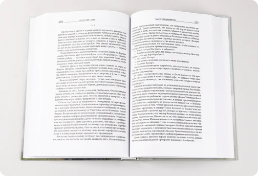
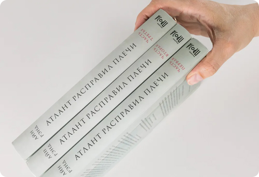

Проект книги для издательства Альпина Паблишер
К власти в США приходят социалисты и правительство берет курс на "равные возможности", считая справедливым за счет талантливых и состоятельных сделать богатыми никчемных и бесталанных. Гонения на бизнес приводят к разрушению экономики, к тому же один за другим при загадочных обстоятельствах начинают исчезать талантливые люди и лучшие предприниматели. Главные герои романа стальной король Хэнк Риарден и вице-президент железнодорожной компании Дагни Таггерт тщетно пытаются противостоять трагическим событиям. Вместо всеобщего процветания общество погружается в апатию и хаос.
 - Это книга, меняющая мировоззрение, она формирует целостное видение мира и дает ответы на вопросы о смысле человеческой жизни и общественном значении предпринимательства.
- По опросам общественного мнения, проведённого в 1991 году Библиотекой Конгресса и книжным клубом "Book of the Month Club" в Америке "Атлант расправил плечи" - вторая после Библии книга, которая привела к переменам в жизни американских читателей.
- Эта книга попала в список бестселлеров The New York Times через три дня после начала продаж и оставалась в нем на протяжении 21 недели.
- Это самое значимое произведение в жизни писательницы, на работу над которым ушло 12 лет ее жизни.